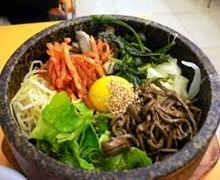

Famous Food
Introduction
Gwangalli
Lotte World
Namsan Tower
Food
Origin of food

Korean food has a long history, spanning diverse cultures and traditions from Gojoseon to the present-day Republic of Korea. Samgyetang and bibimbap have a long history and are healthy foods.